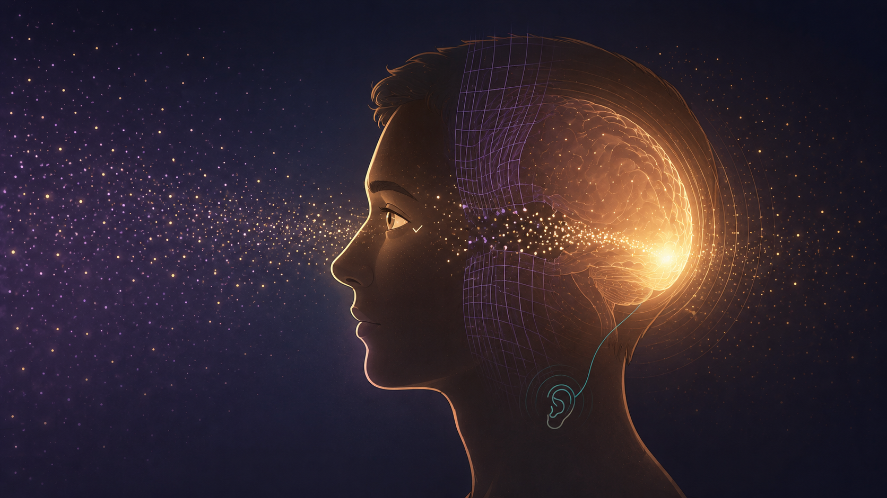
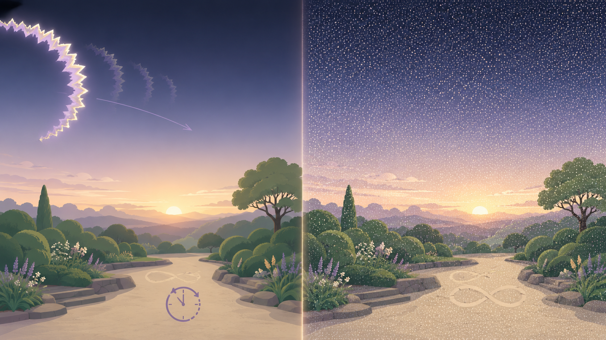
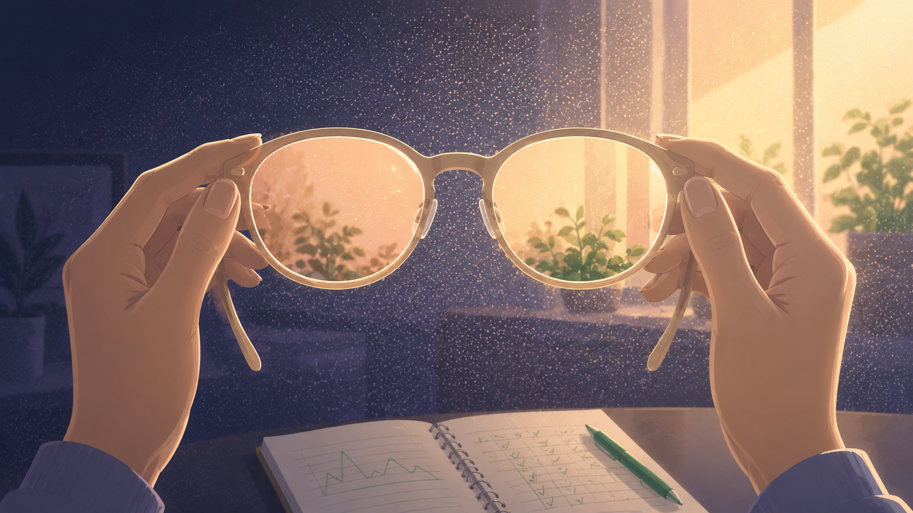

By Rustam Iuldashov
30 years lived experience with chronic migraine | Sources: 25 peer-reviewed references including Brain (n=17), Neurology (n=1,104), European Journal of Neurology (n=1,015), Human Brain Mapping (n=24) | Last updated: June 2026
Medical Review: This content is based on 25 peer-reviewed sources including Brain, Neurology, Brain Communications, Headache, Cephalalgia, Human Brain Mapping, European Journal of Neurology, Eye, and other authoritative journals.
Important Notice: This article is for informational purposes only and does not replace professional medical advice. If you experience a sudden, new, or one-sided change in your vision, seek medical attention promptly.
Key Takeaways
- Visual snow syndrome is a real, recognized neurological condition — constant TV-like static across the whole visual field, present even with eyes closed, lasting more than three months. [1][4]
- The problem is in the brain, not the eyes. Imaging shows an overactive visual region (the lingual gyrus) and a likely failure of the brain’s “noise-cancelling” filter — which is why eye exams come back normal. [7][8][10]
- More than half of people with visual snow also have migraine (roughly 52–72%), and the two share some biology — but they are distinct conditions. [13][4]
- It is not migraine aura. Aura is brief, one-sided, and fades; visual snow is constant, whole-field, and persistent. [15][17]
- There’s no cure, but real help exists: an accurate diagnosis itself reduces distress, and FL-41 tinted lenses, select medications, and behavioral therapies can ease symptoms. [18][20]
- Seek urgent care for any sudden, new, or one-sided visual change with headache or neurological symptoms — visual snow itself is not vision-threatening, but new symptoms must be checked. [24]
Close your eyes. For most people, the world goes dark. For someone with visual snow, it never does. The static stays — thousands of tiny dots swarming across the whole visual field, like a television tuned to a dead channel. Eyes open, eyes closed, bright room, black night. It does not switch off. [1]
If that sounds like your vision, start here: it has a name, it is real, and you are not imagining it.
A Syndrome That Hid in Plain Sight
For decades, people who saw constant static were told they were stressed, anxious, or simply trying too hard to see. Their eye exams were perfect. Their brain scans looked normal. With nothing to point to, reassurance curdled into dismissal. [2] One teenager in a recent case report spent years in psychiatric treatment for a “conversion disorder” before anyone named what she actually had. [3]
That changed in 2014. Neurologist Christoph Schankin and colleagues described visual snow as a condition in its own right — not a stray symptom of migraine, but a distinct syndrome. [4] In 2018, the International Headache Society made it official. [5]
The diagnosis is specific. Visual snow must last more than three months, and it must come with at least two of four extra symptoms [4][5]: palinopsia (trails or afterimages behind moving things), enhanced entoptic phenomena (floaters, sparks, the drift of your own blood cells against a blue sky), photophobia (light sensitivity), and nyctalopia (poor night vision). And it can’t simply be migraine aura wearing a disguise.
It is far more common than its obscurity suggests. A UK population survey put the figure at roughly 2.2% [6] — millions of people, most of whom have never heard the words.
Why Your Eye Doctor Finds Nothing
The problem isn’t in your eyes. It’s in your brain.
The symptom gives it away. Visual snow fills the entire field and stays put with your eyes shut. [1][4] A retina or an optic nerve cannot do that. The static has to be made higher up — where the brain turns raw signal into the picture you call sight.
Imaging confirms it. On PET scans, people with visual snow show an overactive patch of visual cortex called the lingual gyrus. [7] One study clocked its metabolic activity running about 24% hotter than in healthy controls. [8] Meanwhile the eye exam and the standard MRI come back clean — which is precisely why the condition went unseen for so long. [2][4]
The leading idea is hyperexcitability: the visual system runs too hot and can’t dial itself down. [9] Newer work sharpens the picture. Your brain swims in low-level neural noise, and a healthy visual system filters that hiss out before it reaches awareness. In visual snow, the filter fails, and the background becomes the foreground. [10] It is the visual twin of tinnitus — the ringing that never stops — which is why so many people carry both. [11]
And it isn’t one rogue spot. Connectivity studies show several brain networks miscommunicating at once: the visual system, the attention networks, and the salience network that decides what deserves your notice. [12] The brain isn’t broken. It’s miscalibrated.

The Migraine Connection
Here is where this turns personal. More than half of people with visual snow also live with migraine — studies put the range at roughly 52% to 72%. [13][4] Tinnitus runs about as high. [14] And migraine doesn’t just ride along: people who have both tend to suffer a heavier, more symptom-dense version of the syndrome. [2]
But the two are not the same. Migraine and visual snow appear to share some wiring while remaining separate diagnoses. [15] The PET work captures the nuance — the overactive region in visual snow sits right beside the area tied to light sensitivity in migraine, overlapping in biology without collapsing into one condition. [16]
So why should you care about the link? Because if you have migraine and you’ve been quietly enduring constant static, you finally have a frame that explains it — and a term to carry into your doctor’s office.
It Is Not Migraine Aura
The most common mix-up is aura, and the difference is worth memorizing.
Aura is an event. It builds over minutes, takes one slice of your vision — a shimmering zigzag, a spreading blind spot — then fades, usually within an hour. [15][17] It arrives and it leaves.

Visual snow is a state. It covers everything, it greets you the moment you wake and follows you into sleep, and it does not resolve. [1][4] If your “aura” never ends and fills your whole field, it may not be aura at all.
What Actually Helps
The honest truth: there is no cure yet, and nothing works for everyone. [18] That is not the same as nothing helps.
For many people, the most powerful medicine is the diagnosis itself. Learning that the static is a recognized neurological condition — not blindness coming, not a tumor, not “all in your head” — measurably lowers the anxiety that amplifies every symptom. [3][19]
The practical toolkit
Tinted lenses. Precision tints, especially the rose-colored FL-41, block the blue-green wavelengths (around 480–520 nm) that inflame light sensitivity. Several studies report real relief in comfort and intensity — though responses differ sharply from person to person. [18][20]
Medication, with eyes open. No drug erases visual snow. In one large series, lamotrigine brought partial improvement to about one in five patients — but caused notable side effects in more than half. [21] A review of treatment trials found benzodiazepines and lamotrigine fared best, while standard migraine drugs often did nothing and sometimes made things worse. [18][22]
Brain and behavior. Cognitive behavioral therapy and mindfulness-based cognitive therapy show early promise for both the distress and the network dysfunction, and non-invasive brain stimulation is under active study. [18][23]
The basics. Sleep, stress, sensory load. None remove the snow, but each can turn down its volume — and for people with migraine, fewer attacks may mean a quieter baseline. [2][18]

⚠️ When to See a Doctor — and When to Act Fast
Visual snow itself is not dangerous and does not threaten your sight. [24] A sudden, new change is another matter.
Treat it as an emergency and seek care immediately if visual static or other visual symptoms appear abruptly, strike one side only, or arrive with a severe new headache, weakness, slurred speech, or vision loss. These can signal a stroke or other conditions that need urgent treatment.
And any first-time visual disturbance deserves a full eye and neurological exam to rule out other causes before anyone settles on a visual snow diagnosis. Visual snow is a diagnosis of exclusion — do not use this article to self-diagnose. [4][24]
The science is young — almost everything we know has surfaced in the last decade. [25] But the direction is unmistakable. Visual snow has traveled from “imaginary” to a mapped, measurable brain condition. If you see the static, you are not broken. And you are not alone.
Key Takeaways
- Visual snow syndrome is a real, recognized neurological condition — constant TV-like static across the whole visual field, present even with eyes closed, lasting more than three months. [1][4]
- The problem is in the brain, not the eyes. Imaging shows an overactive visual region (the lingual gyrus) and a likely failure of the brain’s “noise-cancelling” filter — which is why eye exams come back normal. [7][8][10]
- More than half of people with visual snow also have migraine (roughly 52–72%), and the two share some biology — but they are distinct conditions. [13][4]
- It is not migraine aura. Aura is brief, one-sided, and fades; visual snow is constant, whole-field, and persistent. [15][17]
- There’s no cure, but real help exists: an accurate diagnosis itself reduces distress, and FL-41 tinted lenses, select medications, and behavioral therapies can ease symptoms. [18][20]
- Seek urgent care for any sudden, new, or one-sided visual change with headache or neurological symptoms — visual snow itself is not vision-threatening, but new symptoms must be checked. [24]
⚕️ Important Medical Disclaimer
This article is for informational and educational purposes only and does not constitute medical advice, diagnosis, or treatment. The author, Rustam Iuldashov, is not a licensed physician, neurologist, ophthalmologist, or healthcare professional. He is a patient advocate with 30 years of personal experience living with chronic migraine.
All clinical claims in this article are sourced from peer-reviewed research published in indexed medical journals. Study designs and sample sizes are noted where applicable.
Always consult a qualified healthcare provider for questions about your individual health, migraine treatment, medication decisions, or any change in your vision.
Visual snow syndrome is a diagnosis of exclusion and is not, in itself, vision-threatening. Never self-diagnose based on this or any other article. If you experience a sudden, new, or one-sided change in your vision — especially with a severe new headache or neurological symptoms — seek medical attention immediately. This content was last reviewed for accuracy in June 2026.
References
- Puledda F, Schankin C, Goadsby PJ. “Visual snow syndrome: a clinical and phenotypical description of 1,100 cases.” Neurology, 94(6):e564–e574 (2020). doi:10.1212/WNL.0000000000008909. Study design: Cross-sectional web survey. n=1,104.
- Puledda F, Schankin C, Goadsby PJ. “Visual snow syndrome: a clinical and phenotypical description of 1,100 cases.” Neurology, 94(6):e564–e574 (2020). doi:10.1212/WNL.0000000000008909. [Same as ref 1; cited for severity, comorbidity, and misdiagnosis findings.]
- Chaibi LS, Hallit S, Majoul S, et al. “Delayed diagnosis of visual snow syndrome due to misdiagnosis as conversion disorder: a rare case report.” European Psychiatry (2025). doi:10.1192/j.eurpsy.2025.1810. Study design: Case report. n=1.
- Schankin CJ, Maniyar FH, Digre KB, Goadsby PJ. “‘Visual snow’ — a disorder distinct from persistent migraine aura.” Brain, 137:1419–1428 (2014). doi:10.1093/brain/awu050. Study design: Clinical characterization (retrospective + prospective). n=120.
- Headache Classification Committee of the International Headache Society. “The International Classification of Headache Disorders, 3rd edition (ICHD-3).” Cephalalgia, 38(1):1–211 (2018). doi:10.1177/0333102417738202. Study design: Consensus diagnostic criteria. n=N/A.
- Kondziella D, Olsen MH, Dreier JP. “Prevalence of visual snow syndrome in the UK.” European Journal of Neurology, 27(5):764–772 (2020). doi:10.1111/ene.14150. Study design: Population survey. n=1,015.
- Schankin CJ, Maniyar FH, Chou DE, et al. “Structural and functional footprint of visual snow syndrome.” Brain, 143:1106–1113 (2020). doi:10.1093/brain/awaa053. Study design: Case-control PET/MRI. n=17 patients + 17 controls.
- “Simultaneous 18F-FDG PET/MR metabolic and structural changes in visual snow syndrome and diagnostic use.” PMC9803799 (2023). Study design: Case-control PET/MR imaging. n=7 patients + 15 controls.
- Lauschke JL, Plant GT, Fraser CL. “Visual snow: a thalamocortical dysrhythmia of the visual pathway?” Journal of Clinical Neuroscience, 28:123–127 (2016). doi:10.1016/j.jocn.2015.12.001. Study design: Hypothesis / review.
- Hepschke JL, Seymour RA, He W, et al. “Cortical oscillatory dysrhythmias in visual snow syndrome: a magnetoencephalography study.” Brain Communications, 4(1):fcab296 (2022). doi:10.1093/braincomms/fcab296. Study design: Case-control MEG. n=18 patients + 16 controls.
- Klein A, Schankin CJ. “Visual snow syndrome as a network disorder: a systematic review.” Frontiers in Neurology, 12:724072 (2021). doi:10.3389/fneur.2021.724072. Study design: Systematic review.
- Puledda F, Ffytche D, O’Daly O, Goadsby PJ. “Disrupted connectivity within visual, attentional and salience networks in the visual snow syndrome.” Human Brain Mapping, 42:2032–2044 (2021). doi:10.1002/hbm.25343. Study design: Case-control fMRI. n=24 patients + 24 controls.
- Klein A, Schankin CJ. “Visual snow syndrome, the spectrum of perceptual disorders, and migraine as a common risk factor: a narrative review.” Headache, 61(9):1306–1313 (2021). doi:10.1111/head.14213. Study design: Narrative review.
- Mehta DG, Garza I, Robertson CE. “Two hundred and forty-eight cases of visual snow: a review of potential inciting events and contributing comorbidities.” Cephalalgia, 41(9):1015–1026 (2021). doi:10.1177/0333102421996003. Study design: Retrospective chart review. n=248.
- Silva EM, Puledda F. “Visual snow syndrome and migraine: a review.” Eye, 37:2374–2378 (2023). doi:10.1038/s41433-023-02435-w. Study design: Review.
- “Visual snow: updates on pathology.” Current Neurology and Neuroscience Reports, 22 (2022). doi:10.1007/s11910-022-01182-x. Study design: Review.
- Schankin CJ, Maniyar FH, Sprenger T, Chou DE, Eller M, Goadsby PJ. “The relation between migraine, typical migraine aura and ‘visual snow’.” Headache, 54(6):957–966 (2014). doi:10.1111/head.12378. Study design: Clinical study. n=78.
- “Diagnostic and management strategies of visual snow syndrome: current perspectives.” Eye and Brain, 15 (2023). doi:10.2147/EB.S418923. Study design: Review of treatment evidence.
- Solly EJ, Clough M, Foletta P, White OB, Fielding J. “The psychiatric symptomology of visual snow syndrome.” Frontiers in Neurology, 12:703006 (2021). doi:10.3389/fneur.2021.703006. Study design: Cross-sectional. n=125.
- “Diagnostic and management strategies of visual snow syndrome: current perspectives.” Eye and Brain, 15 (2023). doi:10.2147/EB.S418923. [Same as ref 18; cited for FL-41 tinted-lens findings.]
- van Dongen RM, Waaijer LC, Onderwater GLJ, Ferrari MD, Terwindt GM. “Treatment effects and comorbid diseases in 58 patients with visual snow.” Neurology, 93:e398–e403 (2019). doi:10.1212/WNL.0000000000007825. Study design: Retrospective cohort. n=58.
- Puledda F, Vandenbussche N, Moreno-Ajona D, Eren O, Schankin C, Goadsby PJ. “Evaluation of treatment response and symptom progression in 400 patients with visual snow syndrome.” British Journal of Ophthalmology, 106:1318–1324 (2022). doi:10.1136/bjophthalmol-2020-318653. Study design: Cohort. n=400.
- Puledda F, Schankin C, Digre K, Goadsby PJ. “Visual snow syndrome: what we know so far.” Current Opinion in Neurology, 31(1):52–58 (2018). doi:10.1097/WCO.0000000000000523. Study design: Review.
- American Academy of Ophthalmology. “What is visual snow syndrome? Symptoms, causes, diagnosis, treatment.” AAO patient resource (2026). Study design: Expert clinical resource. n=N/A.
- “Visual snow: updates on pathology.” Current Neurology and Neuroscience Reports, 22 (2022). doi:10.1007/s11910-022-01182-x. [Same as ref 16; cited for the recency of the research base.]

How We Create Content
- Peer-reviewed sources only. We cite research from Brain, Neurology, Brain Communications, Headache, Cephalalgia, Human Brain Mapping, European Journal of Neurology, Frontiers in Neurology, Eye, British Journal of Ophthalmology, Current Opinion in Neurology, and other authoritative journals.
- Large-sample evidence prioritized. Key claims reference the Puledda 1,100-case cohort (n=1,104), a UK population prevalence survey (n=1,015), a 400-patient treatment cohort, and a 248-case review — alongside controlled PET, MEG, and fMRI imaging studies.
- Source transparency. All 25 references are numbered and verifiable. DOI links provided where available.
- Experience + Science. 30 years of personal migraine experience combined with peer-reviewed evidence on visual snow, cortical excitability, and visual diagnostics.
- Regular updates. We review articles when significant new research emerges. Next scheduled review: December 2026.
- No conflicts of interest. We receive no funding from pharmaceutical companies, lens manufacturers, or any commercial entity with interest in migraine or eye treatment.
See the Static? Start Tracking It.
Migraine Companion helps you log visual symptoms, light sensitivity, and triggers alongside your migraine attacks — turning scattered episodes into the pattern your doctor needs. Built by someone who has navigated migraine for 30 years.
Last reviewed: June 2026
Next scheduled review: December 2026